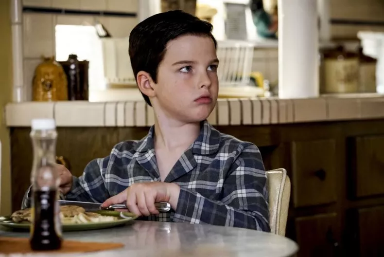

Sheldon Lee Cooper Ph.D., Sc.D., is a fictional character in the CBS television series The Big Bang Theory and
its spinoff series Young Sheldon, portrayed by actors Jim Parsons in The Big Bang Theory.
For his portrayal, Parsons has won four Primetime Emmy Awards, a Golden Globe Award, a TCA Award, and two
Critics' Choice Television Awards.
Sheldon is a senior theoretical physicist at The California Institute of Technology (Caltech), and for the first
ten seasons of The Big Bang Theory shares an apartment with his colleague and best friend, Leonard Hofstadter
(Johnny Galecki); they are also friends and coworkers with Howard Wolowitz (Simon Helberg) and Raj Koothrappali
(Kunal Nayyar).
Sheldon never had romantic relationship until Howard and Raj blackmail Sheldon into meeting Amy Farrah Fowler,
with whom they matched him on a dating website. The two enjoy intellectual games they create, and Amy and
Sheldon openly express the same type of intellectual superiority.
Sheldon is often described as a stereotypical "geek". He is like a "brother" to Leonard. But like Leonard, Raj,
and Howard, he is characterized as being highly intelligent, but he tends to display childlike qualities, such
as extreme stubbornness and a lack of common sense.
Sheldon possesses an eidetic memory and an IQ of 187, although he claims his IQ cannot be accurately measured by
normal tests.
Sheldon has an extensive general knowledge in many subjects including physics, chemistry, biology, astronomy,
cosmology, algebra, calculus, economics, computers, vexillology, engineering, history, geography, linguistics,
programming in Java, geology, football, trains, Star Trek and in addition to being fluent in Klingon, has some
knowledge of Swedish, Finnish, Hindi and Mandarin.
He also shows great talent in music, knowing how to play the piano, the bongos, the recorder, theremin, shows
some skill in Tuvan throat singing and also has perfect pitch.
In response to criticism from his friends that he is mentally ill, Sheldon often retorts, "I'm not crazy; my
mother had me tested"; which his mother has confirmed to be true.
The courses in the SISE degrre Sheldon would love: Introduction to programming in Java, Physics, Algebra.
He would expect from the course Internet development Environments to be challenging and Instructional.
What was hard in this assignment? He would say nothing (so arrogant).
He claims to be an honorary graduate of Starfleet Academy and he's a keen fan of science officer Spock, Sheldon
especially likes the Star Trek franchise and considers it a parallel to religion.
Sheldon photos

Best of Sheldon
Give Sheldon a like
Scan my code
Q&A
פרט שלושה הבדלים עיקריים לפי דעתך בין web 2.0, web 1.0 ו-web 3.0?
השוני העיקרי בין web 1.0 ל- web 2.0, web 3.0 הוא אתרים בבעלות חברות למול אתרים שיתופיים-קהילתיים, מעבר ממידע אישי למידע שיתופי (למשל דף אישי יכול להפוך לבלוג, אינציקלופדיה יכולה להפוך לויקיפדיה וכו..).
Web 1.0 נחשב readonly שמתמקד ביצירת תוכן ע"י היצרנים, 2.0 מתמקד ביצירת תוכן ע"י המשתמשים והיצרנים, 3.0 מתמקד במידע מקושר.
הבדל נוסף הוא האופן שבו מנועי חיפוש מאחזרים מידע:
ב-web 1.0 מנועי חיפוש מאחזרים תוכן מאקרו, ב-web 2.0 מנועי חיפוש מאחזרים תגיות עם תוכן מיקרו וב-web 3.0 מנועי חיפוש יאחזרו טקסטים עם תוכן מיקרו אשר מתוייגים אוטומטית.
הם נבדלים גם בקישוריות בין דפי האינטרנט: web 1.0 ע"י טקסונומיה, web 2.0 ע"י קישורים בין מסמכים ו-web 3.0 ע"י תיוג סמנטי של מידע.
הסבר את ההבדלים על ידי דוגמה של תרחיש שימוש:
(לדוגמא איך יראה חיפוש השאילתה "תופעות לוואי של תרופות" בכל גרסה)
web 1.0: המשתמש ניגש לאתר תרופות מסויים ע"י כתובת > המתשמש מחפש ידנית את התרופה הרצויה > המשתמש מחפש אחר תופעות הלוואי > המשתמש קורא את תופעות הלוואי הרלוונטיות
web 2.0: המשתמש מחפש במנוע חיפוש (למשל google) על תופעות הלוואי של תרופה מסויימת > המשתמש מקבל לינקים לאתרים המתוייגים למילות החיפוש או צירופים שלהם > המשתמש נכנס לאתר כלשהו וקורא את תופעות הלוואי שמעניינות אותו
web 3.0: המשתמש מחפש במנוע חיפוש (למשל google) על תופעות הלוואי של תרופה מסויימת > המשתמש מקבל לינקים לאתרים או חלקי אתרים הקשורים היטב לנושא החיפוש > המשתמש קורא את תופעות הלוואי שמעניינות אותו